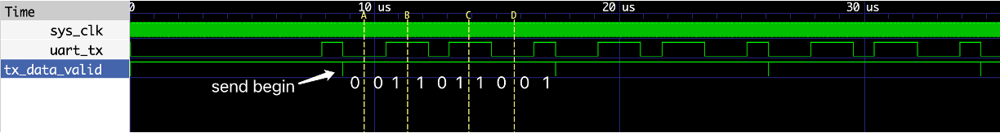
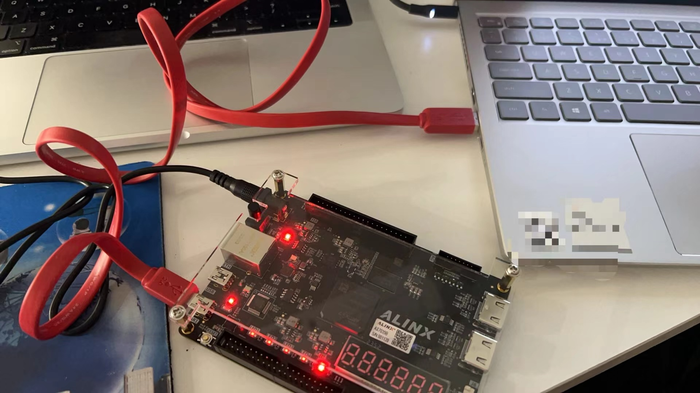
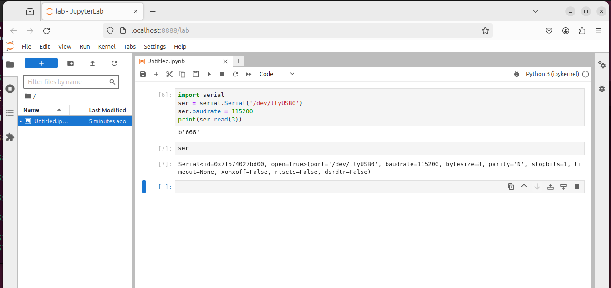

实验5、传输接口UART
教程
我们的目标是熟悉UART的设计与应用
第一步：了解UART协议
推荐教程：https://learn.sparkfun.com/tutorials/serial-communication/all
第二步：读一下UART TX与RX interfaces（接口）数字电路的代码
来自Alinx的UART接口实现： uart.v
它本质上是一个状态机，结合第一步的协议“规定”，看一下它的状态是怎么跳转的即容易读懂。
第三步：写一个不知疲倦发送”6”的UART TX设计
了解了UART的基本原理后，我们试着写一个不停发送”6”(当然是ASCII码啦)的数字电路模块，然后用PC来接收一下。
–特别注意interface用法–
TX pin说明：
Signal |
Direction |
Bit Width |
Function |
|---|---|---|---|
clk |
I |
1 |
system clock |
rst_n |
I |
1 |
async reset, low active |
tx_data |
I |
8 |
data to send (1byte) |
tx_data_valid |
I |
1 |
ok to send? high active |
tx_data_ready |
O |
1 |
tx interface status. 1: ready to send; 0: busy |
tx_pin |
O |
1 |
tx pin |
RX pin说明：
Signal |
Direction |
Bit Width |
Function |
|---|---|---|---|
clk |
I |
1 |
system clock |
rst_n |
I |
1 |
async reset, low active |
rx_data |
O |
8 |
received data (1byte) |
rx_data_valid |
O |
1 |
received done? high active |
rx_data_ready |
I |
1 |
ready to receive? high active |
rx_pin |
I |
1 |
rx pin |
需要检查的端口：
Signal |
Direction |
Bit Width |
Function |
|---|---|---|---|
tx_data_ready |
O |
1 |
tx interface status. 1: ready to send; 0: busy |
rx_data_valid |
O |
1 |
received done? high active |
需要Interface用户控制的信号：
Signal |
Direction |
Bit Width |
Function |
|---|---|---|---|
tx_data_valid |
I |
1 |
ok to send? high active |
rx_data_ready |
I |
1 |
ready to receive? high active |
我们先写一个数字电路模块来利用UART TX interface，在reset之后，把”6”(注意这里是ASCII码,不是8’d6;当然想传8’d6也没有问题的)的码字不停地扔向tx_data：
module test1
(
input sys_clk, //system clock 50Mhz on board
input rstb, //reset ,low active
output uart_tx //fpga send data
);
parameter CLK_FRE = 50;//Mhz
localparam [1:0] STATE_RESET = 0, STATE_SEND = 3;
// communication interface
reg [7:0] tx_data;
reg tx_data_valid;
reg [1:0] state;
// State transfer
always@(posedge sys_clk or negedge rstb)
begin
if(~rstb)
begin
tx_data <= 8'd0;
tx_data_valid <= 0;
state <= STATE_RESET;
end
else
case(state)
STATE_SEND: begin
if(tx_data_valid && tx_data_ready)//last byte sent is complete
begin
// "6" is 8'b00110110;
// send from LSB to MSB: 01101100
tx_data <= "6";
tx_data_valid <= 1'b0;
end
else if(~tx_data_valid)
begin
tx_data_valid <= 1'b1;
end
end
default: begin//STATE_RESET
state <= STATE_SEND;
end
endcase
end
// UART Interface
uart_tx #
(
.CLK_FRE(CLK_FRE),
.BAUD_RATE(115200)
) uart_tx_inst
(
.clk (sys_clk),
.rst_n (rstb),
.tx_data (tx_data),
.tx_data_valid (tx_data_valid),
.tx_data_ready (tx_data_ready),
.tx_pin (uart_tx)
);
endmodule
可以写一个testbench来仿真验证一下：
`timescale 1ns/1ns
`include "uart.v"
module test_top;
reg sys_clk = 0;
reg rstb = 0;
reg uart_rx = 0;
wire uart_tx;
always #1 sys_clk = ~sys_clk;
initial begin
#2 rstb = 1;
#100000 $finish;
end
initial begin
$dumpfile("wave.vcd");
$dumpvars(0,test_top);
end
test1 u1(
.sys_clk(sys_clk),
.rstb(rstb),
.uart_tx(uart_tx)
);
endmodule
不过需要注意的是，UART的波特率设为115200（意思是TX RX的变化速度为115200 bps, bit per second），而uart interface (tx或rx)都是用50MHz的时钟去采样的，所以每bit UART tx_pin或rx_pin的变化都需要 50M/115200≈435个周期，所以仿真的时候一定多仿一会，比如放十万个cycle #100000 $finish。
带标记的结果如下：

确实不停地在发送字符“6”；上图中标记开始的“0”和结束的“1”分别为UART协议(protocol)中的起始位与结束位，回去看一下uart.v中的interface设计第150行：发送最后一位对应的state叫S_STOP，对应的输出tx_reg=1。
其实还有其它UART变种协议，会在data bit与stop bit中间发送1bit的(奇偶)校验bit，但是我们这里的设计uart.v并没有把检验位设计进去。
第四步：在仿真前能读懂示例程序在干啥
Alinx的官方教程提供了一个示例教程：串口收发实验。
–我们可以先用实际FPGA与PC试一下“不停发送666”程序的通信–
根据上面的串口收发实验示例教程，试着连一下我们自己的Verilog数字电路设计：
FPGA端:
通过vivado把上面的test1 module烧到我们的FPGA中去，记得绑定IO；
FPGA的constraint:
set_property CFGBVS VCCO [current_design]
set_property CONFIG_VOLTAGE 3.3 [current_design]
set_property BITSTREAM.CONFIG.SPI_BUSWIDTH 4 [current_design]
set_property CONFIG_MODE SPIx4 [current_design]
set_property BITSTREAM.CONFIG.CONFIGRATE 50 [current_design]
create_clock -period 20 [get_ports sys_clk]
set_property IOSTANDARD LVCMOS33 [get_ports {sys_clk}]
set_property PACKAGE_PIN Y18 [get_ports {sys_clk}]
set_property IOSTANDARD LVCMOS33 [get_ports {rstb}]
set_property PACKAGE_PIN F20 [get_ports {rstb}]
# set_property IOSTANDARD LVCMOS33 [get_ports uart_rx]
# set_property PACKAGE_PIN G15 [get_ports uart_rx]
set_property IOSTANDARD LVCMOS33 [get_ports uart_tx]
set_property PACKAGE_PIN G16 [get_ports uart_tx]
PC端
可以用python提供的包 pyserial，注意使用之前需要先安装 (pip install pyserial)，具体的安装流程见：here
在将上面的FPGA设计程序烧录到FPGA之后，连接A7035B开发板上的UART口到PC的USB端：

自己写个简单的接收程序：
import serial
ser = serial.Serial('/dev/ttyUSB0')
# ser = serial.Serial('COM1')
ser.baudrate = 115200
print(ser.read(3)) #收3个byte，理论上应该会出现“666”
注意：不同操作系统对于接口的命令规则不太一样，windows的话应该类似于COM1、COM2这种，需要去设备管理器去找对应的接口；Linux/MACOS的应该类似于上面的/dev/ttyUSB0或者/dev/tty.usbserial0.
成功的话结果应该为：

这样我们就先完成一次简单数字芯片与上位机之间的通信对接！🛰
–最终再试着不仿真的情况读一下下面的代码–
module uart_test
(
input sys_clk, //system clock 50Mhz on board
input rst_n, //reset ,low active
input uart_rx, //fpga receive data
output uart_tx //fpga send data
);
parameter CLK_FRE = 50;//Mhz
localparam IDLE = 0;
localparam SEND = 1; //send HELLO ALINX\r\n
localparam WAIT = 2; //wait 1 second and send uart received data
reg[7:0] tx_data;
reg[7:0] tx_str;
reg tx_data_valid;
wire tx_data_ready;
reg[7:0] tx_cnt;
wire[7:0] rx_data;
wire rx_data_valid;
wire rx_data_ready;
reg[31:0] wait_cnt;
reg[3:0] state;
assign rx_data_ready = 1'b1;//always can receive data,
//if HELLO ALINX\r\n is being sent, the received data is discarded
/*************************************************************************
1 second sends a packet HELLO ALINX\r\n , FPGA has been receiving state
****************************************************************************/
always@(posedge sys_clk or negedge rst_n)
begin
if(rst_n == 1'b0)
begin
wait_cnt <= 32'd0;
tx_data <= 8'd0;
state <= IDLE;
tx_cnt <= 8'd0;
tx_data_valid <= 1'b0;
end
else
case(state)
IDLE:
state <= SEND;
SEND:
begin
wait_cnt <= 32'd0;
tx_data <= tx_str;
if(tx_data_valid == 1'b1 && tx_data_ready == 1'b1 && tx_cnt < 8'd12)//Send 12 bytes data
begin
tx_cnt <= tx_cnt + 8'd1; //Send data counter
end
else if(tx_data_valid && tx_data_ready)//last byte sent is complete
begin
tx_cnt <= 8'd0;
tx_data_valid <= 1'b0;
state <= WAIT;
end
else if(~tx_data_valid)
begin
tx_data_valid <= 1'b1;
end
end
WAIT:
begin
wait_cnt <= wait_cnt + 32'd1;
if(rx_data_valid == 1'b1)
begin
tx_data_valid <= 1'b1;
tx_data <= rx_data; // send uart received data
end
else if(tx_data_valid && tx_data_ready)
begin
tx_data_valid <= 1'b0;
end
else if(wait_cnt >= CLK_FRE * 1000000) // wait for 1 second
state <= SEND;
end
default:
state <= IDLE;
endcase
end
/*************************************************************************
combinational logic Send "HELLO ALINX\r\n"
****************************************************************************/
always@(*)
begin
case(tx_cnt)
8'd0 : tx_str <= "H";
8'd1 : tx_str <= "E";
8'd2 : tx_str <= "L";
8'd3 : tx_str <= "L";
8'd4 : tx_str <= "O";
8'd5 : tx_str <= " ";
8'd6 : tx_str <= "A";
8'd7 : tx_str <= "L";
8'd8 : tx_str <= "I";
8'd9 : tx_str <= "N";
8'd10: tx_str <= "X";
8'd11: tx_str <= "\r";
8'd12: tx_str <= "\n";
default:tx_str <= 8'd0;
endcase
end
/***************************************************************************
calling uart_tx module and uart_rx module
****************************************************************************/
uart_rx#
(
.CLK_FRE(CLK_FRE),
.BAUD_RATE(115200)
) uart_rx_inst
(
.clk (sys_clk ),
.rst_n (rst_n ),
.rx_data (rx_data ),
.rx_data_valid (rx_data_valid ),
.rx_data_ready (rx_data_ready ),
.rx_pin (uart_rx )
);
uart_tx#
(
.CLK_FRE(CLK_FRE),
.BAUD_RATE(115200)
) uart_tx_inst
(
.clk (sys_clk ),
.rst_n (rst_n ),
.tx_data (tx_data ),
.tx_data_valid (tx_data_valid ),
.tx_data_ready (tx_data_ready ),
.tx_pin (uart_tx )
);
endmodule
常见Bug：
UART不识别:: CP2101转换芯片需要单独再装一下驱动,https://www.silabs.com/developers/usb-to-uart-bridge-vcp-drivers?tab=downloads
UART不识别:: 硬件插错口了,USB线要插UART口而非JTAG口
总是发生bit error:: 我上面示例程序写得其实并不好,所以总出错；通过改变触发条件(tx_send_enable, rx_receive_enable)可以改善。
练习
我们来设计一个用FPGA（加速）计算向量-矩阵乘法的数字系统。
整体工作流程为：
PC端（上位机）通过UART发送待计算数据到FPGA
3×2矩阵W
1×3的向量X
FPGA进行计算Y=X·W，结果维度应为1×2
FPGA通过UART发送计算结果Y至上位机，并在显示器上打印出计算结果。
注：本练习中涉及到的每个标量均为32bit unsigned integer，不考虑溢出。
提示： 第2步中的加速计算可直接使用下方模块：
module VMM(
input [31:0] x0,
input [31:0] x1,
input [31:0] x2,
input [31:0] w00,
input [31:0] w01,
input [31:0] w10,
input [31:0] w11,
input [31:0] w20,
input [31:0] w21,
output [31:0] y0,
output [31:0] y1
);
assign y0 = x0 * w00 + x1 * w10 + x2 * w20;
assign y1 = x0 * w01 + x1 * w11 + x2 * w21;
endmodule
Note
[问题1] 完成述的FPGA代码与PC端代码（建议Python，其它语言亦可）。
请于实验报告中展示相关结果（包括但不限于FPGA与PC连接的工作照片、Verilog仿真波形图、PC端输入与输出的结果）。
请一同上传FPGA端与PC端源代码。